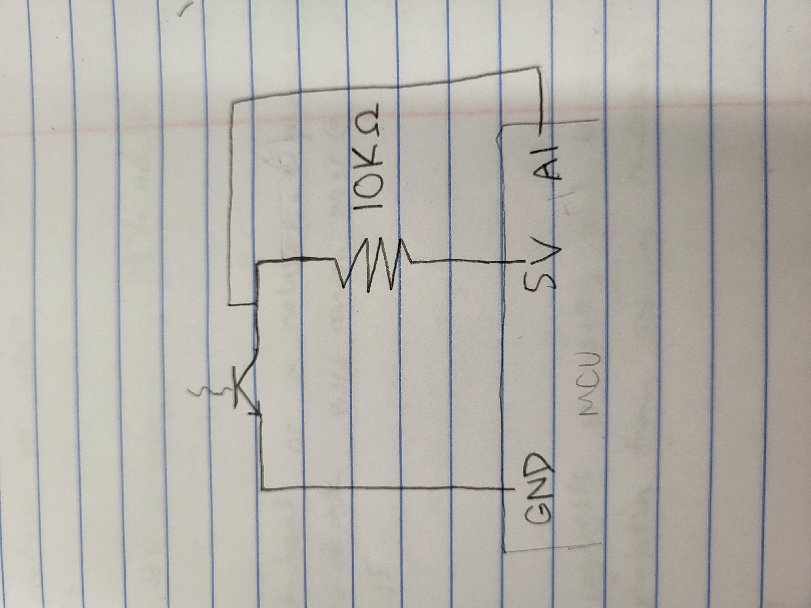
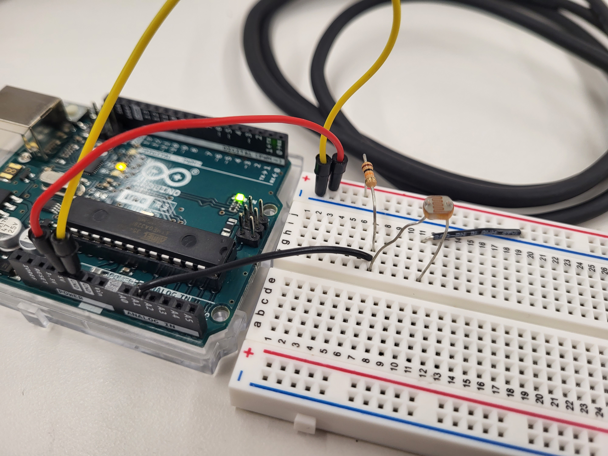
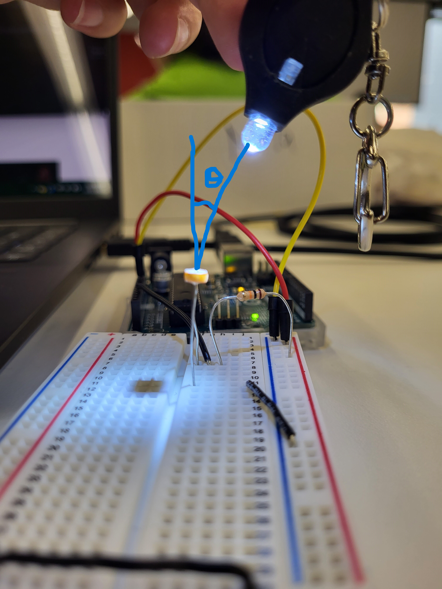
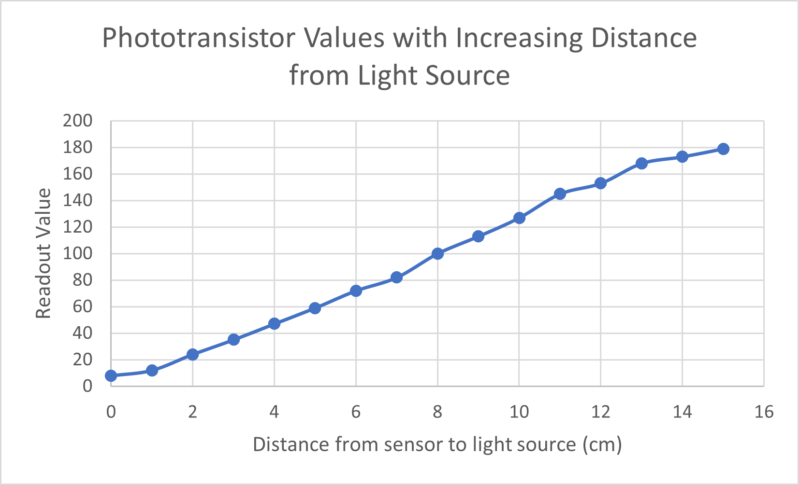
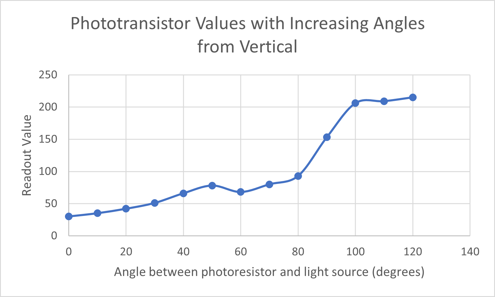
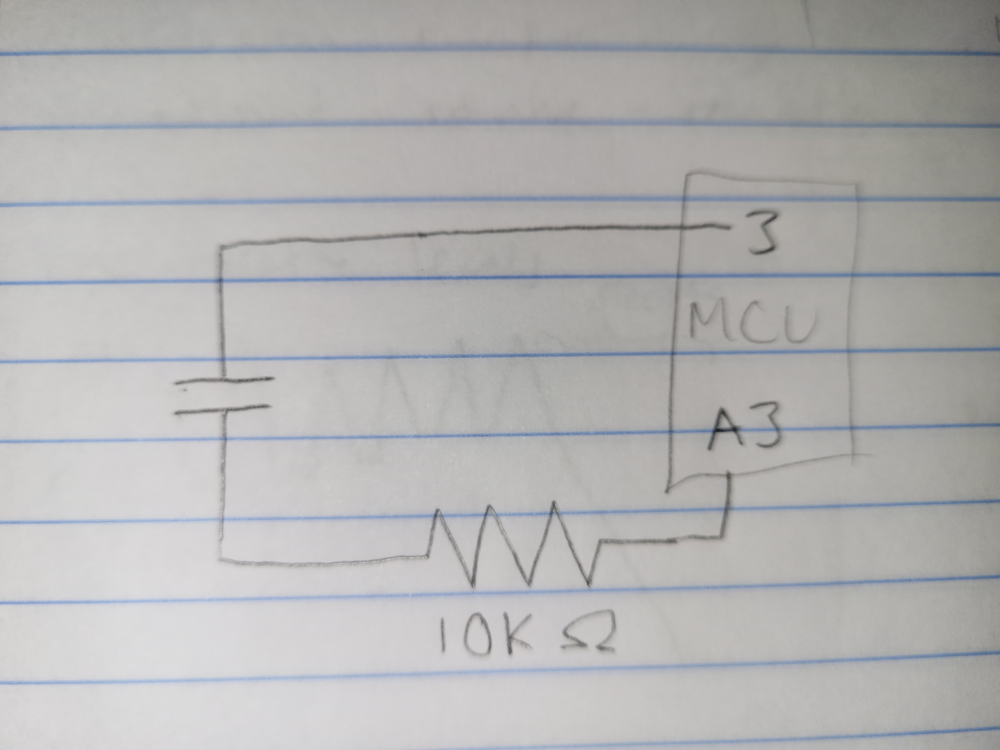
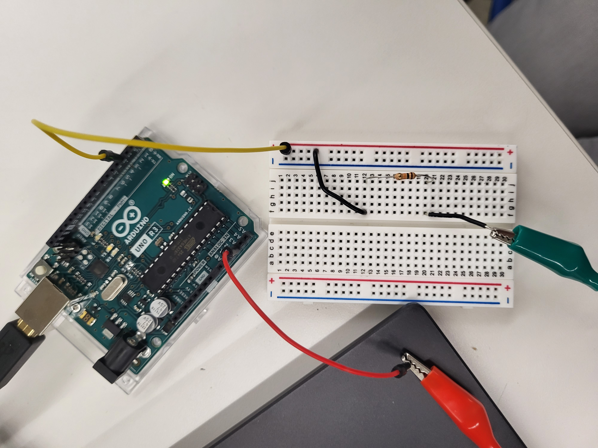
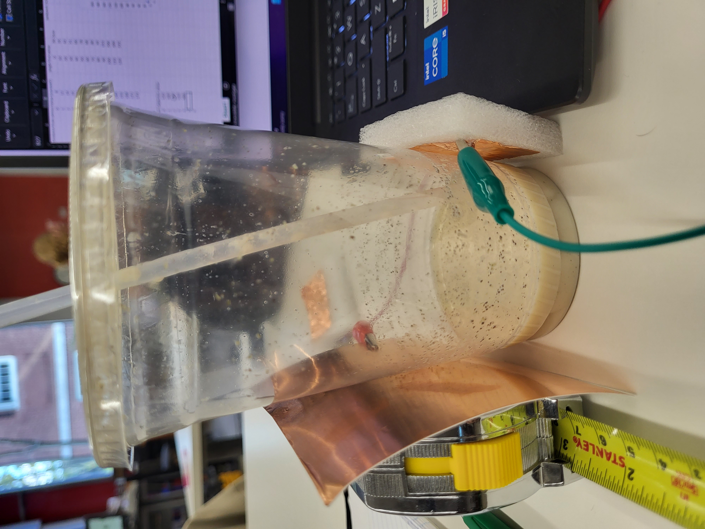
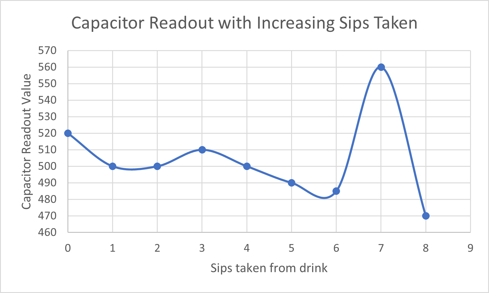

<br>
#### Week 6: Electronic Input Devises
This week, I made working circuits incorporating electronic input devices, including a phototransistor and a capacitor.
I was able to test the circuits and better understanding how they work by reading some output values in the Serial Monitor in Arduino at various input levels, and I plotted the changes in output values as I manipulated the input levels by controlled amounts (i.e., amount of light for the photoresistor; material between plates for the capacitor).
<h5>Photoresistor Setup</h5>
Here's a schematic and a photo of my wiring for the circuit I made with the photoresistor.
<br>

<br>
<br>

<br>
<h5>Photoresistor Code</h5>
Here's the (super simple) code I used, which essentially reads out the value at pin A1 and prints it in the Serial Monitor:
<pre><code class="language-arduino">
void setup() {
// initialize serial communication at 9600 bits per second:
Serial.begin(9600);
}
// the loop routine runs over and over again forever:
void loop() {
// read the input on analog pin 1:
int sensorValue = analogRead(A1);
// print out the value you read:
Serial.println(sensorValue);
delay(1); // delay in between reads for stability
}
</code></pre>
<br>
I found that the approximate readout value of the room was around 320, and the maximum readout value I could get by covering the phototransistor completely with my hand was around 1000. So as light input increased, the readout value decreased.
I did a little experiment to manipulate the level of light that the photoresistor was sensing. I have a little flashlight on my keychain, so I raised it vertically at progressively further distances from the phototransistor, keeping the light angled consistently downward at the face of the phototransistor. I also took another set of readout values as I varied the angle of the light, keeping the distance away constant at 3cm.
Here's a picture of the setup as I was varying the angle (labelled as theta in blue in the image below), as well as my graph of the readout values at various distances away from the light:
<br>

<br>
<br>

<br>
This distance graph appears pretty linear. I'm not 100% sure if that linear trend would have been maintained had I kept recording values for distances past 15cm, though.
<br>
<br>

<br>
The angle graph appears to start to follow an exponential trend, with values increasing more as the angle reaches 90 degrees, but then it levels off after that (which makes sense, because that's when the light source is no longer shining on the face of the photoresistor).
<br>
<br>
<h5>Capacitor Setup</h5>
This one was kind of silly goofy. I had ordered a London Fog from Darwin's, and remembered that Nathan had made a capacitor using copper sheets on either side of a cup of water, so I wanted to see if that worked for my handcrafted beverage.
Here's a schematic and picture of my setup:
<br>

<br>
<br>

<br>
<h5>Capacitor Code</h5>
Here's another code chunk I used for the capacitor readout:
<pre><code class="language-arduino">
long result; //variable for the result of the tx_rx measurement.
int analog_pin = A3;
int tx_pin = 4;
void setup() {
pinMode(tx_pin, OUTPUT); //Pin 4 provides the voltage step
Serial.begin(9600);
}
void loop() {
result = tx_rx();
Serial.println(result);
}
long tx_rx(){ // Function to execute rx_tx algorithm and return a value
// that depends on coupling of two electrodes.
// Value returned is a long integer.
int read_high;
int read_low;
int diff;
long int sum;
int N_samples = 100; // Number of samples to take. Larger number slows it down, but reduces scatter.
sum = 0;
for (int i = 0; i < N_samples; i++){
digitalWrite(tx_pin,HIGH); // Step the voltage high on conductor 1.
read_high = analogRead(analog_pin); // Measure response of conductor 2.
delayMicroseconds(100); // Delay to reach steady state.
digitalWrite(tx_pin,LOW); // Step the voltage to zero on conductor 1.
read_low = analogRead(analog_pin); // Measure response of conductor 2.
diff = read_high - read_low; // desired answer is the difference between high and low.
sum += diff; // Sums up N_samples of these measurements.
}
return sum;
}
</code></pre>
<br>
Here's what the capacitor looked like:
<br>

<br>
Rather than using a pipette at very controlled volume levels, I used a simpler albeit less consistent method to progressively remove water from the cup - by drinking it in sips. I tried my best to keep a consistent sip size.
Here is my graph of the readout values at different volume levels. On the x-axis, 0 sips means the liquid in the cup was at its starting level, 4 cm high, and I finished the drink after 8 sips, so each sip corresponded to about a 0.5cm vertical decrease in liquid level.
<br>

<br>
Now, there was a lot of noise in this one, and I think I accidentally moved the cup around a bit at the 7th sip, which likely affected the abnormally high readout value for that datapoint. Overall, though, it seems like the values decreased as the liquid level in the cup decreased. This aligns with what I know about water's high capacitance, so it makes sense that these values would be higher when the water level is higher (though the readout values are proxies rather than direct measurements).
<br>
<h5>Takeaways</h5>
I learned a lot about the different types of electronic input devices this week, and I still would love to explore the many other input devices I didn't get to this week. A microphone or ultrasonic sensor would be really cool to figure out how to use.
<br>
I found that the photoresistor was pretty intuitive and didn't have much noise, whereas the capacitor was super finicky and had a huge range of values even when I wasn't anywhere near the circuit. Overall though, I have a better understanding of how the capacitors operate and how to manipulate their output values by manipulating distance between plates, area of overlap, and absolute permittivity of the space between the plates. If I were to repeat this week's project, I would have tried to attach the copper sheets more securely to the cup/capacitor setup, plus shield the setup from the surroundings to eliminate more of the noise.
<br>
The topics from this week will definitely come in handy for my final project idea of an automatic plant waterer. I might be able to use a capacitor to sense moisture level and see when the plant needs watering. I might even be able to use the photoresistor I made this week to detect the amount of sunlight the plant is getting, and adjust the shade or orientation of the plant accordingly.
<br>
Click [here](../index.html) to return to the homepage.